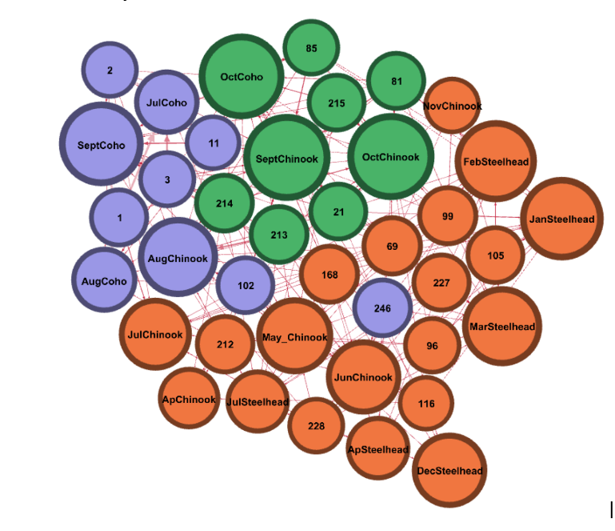

Welcome to the Oregon Trophy Fishing Website
This website provides salmon and steelhead visualizations based on Chinook, Steelhead, and Coho catch statistics. Click on the different links above to view visualizations based on each fish.
(Figure 1) Salmon and Steelhead monthly catch counts shown in a force-directed Gephi graph.
The process for utilizing the graph is as follows: If it is September and we want to go fishing, we can look at the graph and see that there are SeptCoho and SeptChinook nodes. Then, we look at the similar colored water bodies and have options for the location to fish. For example, if I decide I want to fish for Chinook salmon in September (the green SeptChinook node), I know I should fish at location code 213, 214, 21, or 215 as they are also green. All of these locations are the best spots to catch Chinook salmon in Oregon during the month of September.
This graph removes the question: "When and Where do I catch salmon/Steelhead?"